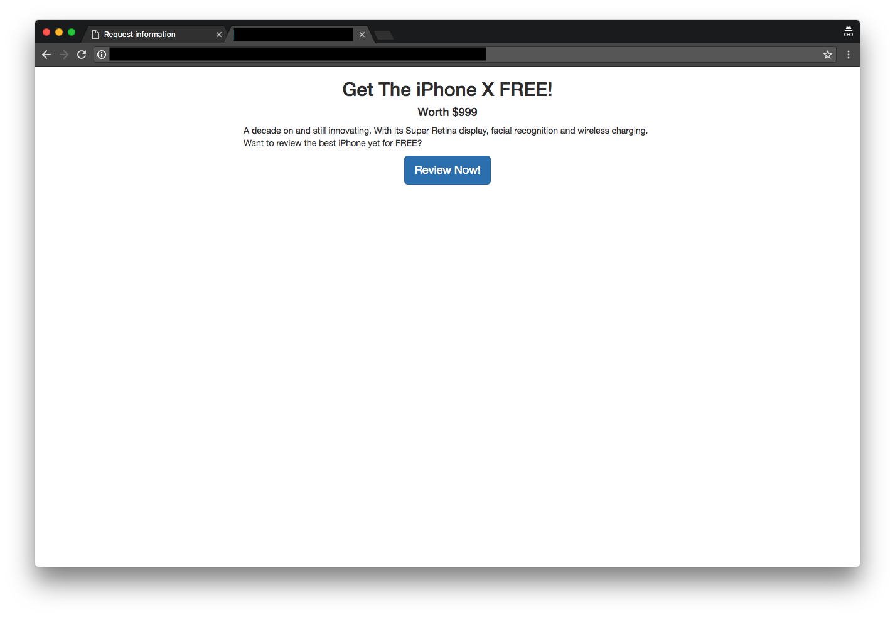

CSRF attack agains Squeak!
First, M. Schönfinkel signs in to Squeak! and is presented with the main page.

Second, M. Schönfinkel is tricked into visiting a malicious site while signed in to Squeak!.

Third, the malicious site has successfully used posted as M. Schönfinkel in Squeak!. The post contains a link to the malicious site. If any other user clicks the link they, too, become victims of the CSRF attack.